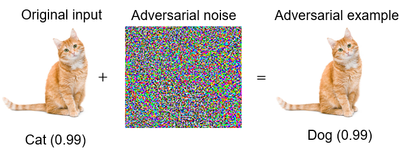
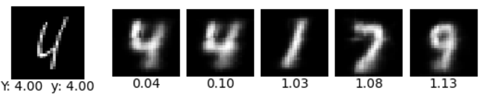

Improving Robustness of Prototype-Based DNNs
This project investigates the vulnerabilities of Prototype-Based Deep Neural Networks (DNNs) to adversarial attacks and proposes strategies to improve their robustness. These networks, designed to be self-explaining by using prototypes for decision-making, offer greater interpretability compared to traditional "black-box" models.
Model Architecture
The architecture of the prototype-based DNN consists of an encoder network, a prototype layer, a fully connected layer, and a decoder network. The input image is first encoded into a lower-dimensional space by the encoder. The encoded input is then compared with several learned prototypes in the prototype layer using the squared L2 distance.
This design ensures interpretability, as users can visualize the closest prototypes and understand how the model arrived at its prediction. Below is the overall architecture:

Adversarial Attack Framework
Adversarial attacks attempt to subtly modify input data in such a way that the perturbations are imperceptible to humans, yet they can significantly mislead a neural network. In this project, we used adversarial attacks to assess the vulnerabilities of prototype-based DNNs, focusing on methods such as:
- Fast Gradient Sign Method (FGSM): A one-step attack that calculates the gradient of the loss with respect to the input and adjusts the input by following the gradient direction.
- Projected Gradient Descent (PGD): An iterative attack where small perturbations are repeatedly applied, increasing the adversarial robustness challenge for the model.
Below is an example where slight adversarial noise transforms a "cat" image into being classified as a "dog." This highlights the impact of adversarial perturbations, which are imperceptible to the human eye but confusing to the model.

Original Classification: Cat (0.99)
Adversarial Classification: Dog (0.99)
Model Explanation Example
The prototype-based DNN explains its predictions by showing the closest learned prototypes for a given input. For instance, when classifying an image of the digit '4', the model shows how it associates the input with prototypes of '4', providing transparent reasoning.

Input: Digit '4'
Top 3 Closest Prototypes:
Prototype 1: Distance = 0.04
Prototype 2: Distance = 0.10
Prototype 3: Distance = 1.03
Proposed Defenses
To improve the robustness of prototype-based DNNs against adversarial attacks, several defense strategies were implemented:
- Adversarial Training: The model was trained with adversarial examples to make it resilient against such attacks. This strengthens the decision boundaries, making it more resistant to small perturbations.
- Modified Autoencoder Loss: To ensure that the prototypes remain closely related to their respective classes, the autoencoder loss was modified to preserve the latent space.
- Prototype Regularization: Regularization ensures that the prototypes stay representative of their classes, reducing the chance of successful adversarial attacks.
Conclusions
The experiments confirmed that prototype-based DNNs are vulnerable to adversarial attacks. However, after applying the proposed defenses, the model's robustness was significantly improved. The table below shows the accuracy of the default model and the adversarially trained model on both the default and adversarial test sets, along with the improvement percentage directly under the adversarial accuracy.
| Model | Accuracy on Default Test Set (%) | Accuracy on Adversarial Test Set (%) |
|---|---|---|
| Default Model | 99.17% | 1.48% |
| Adversarially Trained Model | 98.25% |
97.30% +60.59% |
Adversarial training was particularly effective, reducing the model’s susceptibility to adversarial examples and maintaining high classification accuracy even under attack. Additionally, the modified autoencoder and prototype regularization further improved the reliability of the explanations, ensuring that the model's decision-making process remained transparent and trustworthy.
The combination of interpretability and robustness achieved in this work demonstrates the potential of prototype-based DNNs for use in high-risk applications, such as healthcare or autonomous systems, where both accurate predictions and clear explanations are essential for building trust in AI systems.
You can view the source code and detailed implementation on GitHub.